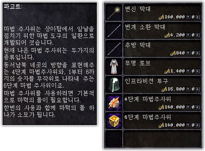
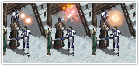

| 2004年1月31日 韓國測試伺服器1月30日更新內容
來源：韓國天堂官方網站公告
|
Lineage GameAbout
英文翻譯：Lineage
Center
加入了四方向骰子及數字1-6的骰子，這些骰子可以無限次使用，但不能轉移，每使用一次會消耗一粒魔寶。
骰子可以在象牙塔1樓的NPC裡購得，在10%稅率下售價為100,000金幣。
以下圖片取自Lineage GameAbout：
NPC的對話及骰子的售價，稅率應該是50%：

使用骰子時的效果：

骰子的動畫：
美國測試伺服器1月30日更新內容
來源：美國天堂官方網站公告
1. 修正了王族45級任務中冰之女皇侍女的問題。
2. 果凍怪變身的等級須求為15級。
3. 黑妖村治療NPC的費用為一顆黑魔石，有關NPC文字描述是錯誤的。
4. 修正了一些在傲塔之塔會斷線的問題。
5. 傲塔54，64，74，84及94樓部分安全區域改為一般區域。
6. 傲塔之塔的設定重新平衡，怪物的出生率、魔法攻擊及掉下的物品都有所改變，請玩家提高警覺。 |